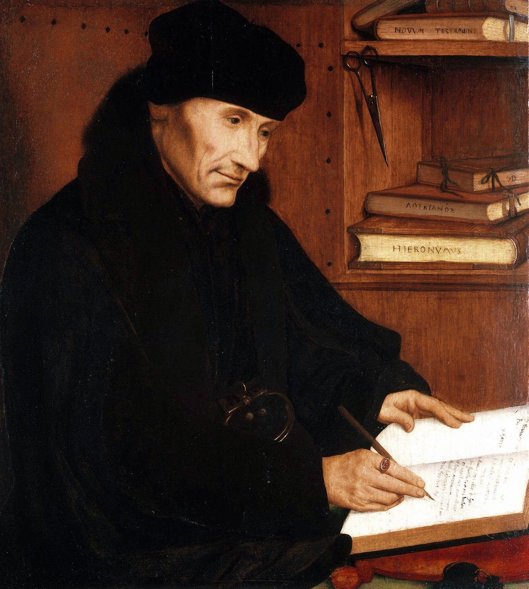

Observe
Light directs the eye.
Brightness was never simply atmosphere. It told viewers where meaning lived.
Luce Museum · Bengaluru
Portraits, private worlds, and the quiet technologies that changed how we look.
Scroll to enter
The exhibition
Four intimate chapters trace how identity was composed, illuminated, and remembered long before the screen.
Ways of seeing
Paint, posture, clothing, and light were arranged to transmit identity. The archive follows those visual codes into our image-saturated present.
Brightness was never simply atmosphere. It told viewers where meaning lived.

A lens, a letter, a fur cuff: private details become public signals.

The most enduring portraits turn observation into a meeting between equals.
Selected works
Nine encounters. Nine ways of being seen. Hover or focus to open a work; select it to look closer.
Light becomes language.
Plan your visit
3 October 2026
31 January 2027
Tue–Sun, 10:00–18:00
Friday until 21:00
Luce Museum
Koramangala, Bengaluru
Adults ₹450
Students ₹200